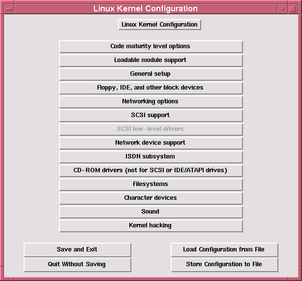

Experiences with Kernel 2.0 Upgrade
Experiences with Kernel 2.0 Upgrade
by John M. Fisk <fiskjm@ctrvax.vanderbilt.edu>
However, the improvements in the 2.0 kernel are pretty impressive, especially for someone like me who wasn't really following the 1.3.x developement very closely. A couple things about the 2.0 kernel that I personally REALLY liked were:
These are just the things that I happen to like. I'm sure that for many of you the list would be a lot longer.
But before I go any further, let me cut to the chase:
IF YOU'RE USING REDHAT THEN FATE, MY FRIEND, IS SMILING ON YOU!
Thanks to the wonders of modern technology (and a bit of "sweat of the brow" work on the part of the guys at RedHat) all you RedHat users can just ignore the rest of this article and toddle on down to your friendly, neighborhood RedHat WWW Site and follow the instructions for RPM'ing your way to a (reasonably painless :-) 2.0 upgrade.
See Ya! Tell the guys at RedHat "Howdy" from me!
Hmmm... OK, who's left?
Seriously, this is one of the reasons I'm planning to switch over to a RedHat system. Not to get into a bruhaha over the merits of one distrubtion over another, but the ease of upgrade is one of the things that I really like about RedHat. Now, before you get in a dander, I'm still running and enjoying a seriously hacked up Slackware 3.0.0 distribution which has served me well for the past 8 to 9 months or so.
Anyway, let's see what needs to be done to get up to speed.
The first thing I did was to pick up a copy of the kernel 2.0 sources which was at my favorite Linux FTP watering hole:
GA Tech always keeps a pretty up to date sunsite mirror and so I popped in one afternoon and checked out the Incoming directory for new toys. Now, the first thing that struck me about the new kernel was its sheer size: this 'ol Bubba is one Big Boy! Weighing in a over 5MB I set up the download on my trusty 14.4 USR and stepped out for some Nachos and a Coke.
Here is the first of a couple caveats: when I went to unarchive the 2.0 kernel sources I failed to check the *.tar.gz archive before unfurling it into /usr/src...
Bad Mistake :-(
Before unarchiving ANYTHING it's probably a good idea to do a listing of it first to have a peek at what's there. You see, the 2.0 kernel is archived under a "linux" top directory. That's not a problem unless your current kernel sources are also under /usr/src/linux. I'd set up the 1.2.13 sources as "linux-1.2.13-ELF" and then created a symlink from that directory to "linux". When I unarchived the 2.0 sources, guess what happened to the 1.2.13 sources...
Right... they were Ghandi mon...
Serious Bummer... :-(
It wasn't a huge deal to reinstall the old 1.2.13 sources again and then fix the symlinks to point back to the 1.2.13 files, but I did kick myself a couple times for being careless.
Anyway, forwarned is forarmed.
Do yourself a favor: READ THIS!!
The file lists several original sources for this information including:
There is now a Web page maintained by John Taylor at http://www.cviog.uga.edu/LinuxBleed.html which includes the same material as that in the Changes document.
I printed a copy of this and it turned out to be an invaluable guide for anticipating where I could potentially run into trouble and what things needed to be upgraded.
Also, there are a number of other short-to-medium length documents in the Documentation directory that you might be interested in -- modules.txt, ide.txt, ppp.txt, ramdisk.txt, java.txt, and so forth. After printing these up and skimming over them I felt pretty comfortable with what needed to be done.
As you can see, the "Victims of Modernization" were many :-)
The good news is that, depending on whether you're a "glass is half-empty or glass is half-full" kind of guy or gal, that the same helpful Changes document also includes a listing of where to find all of these needed programs.
So, after another afternoon spent chasing down programs from the four winds of the earth it was just about time to start the whole upgrade affair. I should also point out one very important thing: in order to compile the new kernel you'll need to upgrade a number of the development tools including GCC, binutils, libc and libg++ libraries, make, and so forth. These are available as binaries. Unless you're the masochistic type, save yourself the hassle and just get the binaries! Also, you'll need to do just a bit more reading as the development stuff comes with release notes -- you'll probably want to print and read these as well.
Anyway, after generating a sheaf of papers and coloring them up with Hi-Liter, I felt reasonably ready...
Phew! Got to check a few things off my list...
I went ahead and tried compiling a few small programs just to make sure that things were working correctly. After a couple quick compiles, I also changed the /usr/src/linux symlink to point to the new 2.0 kernel sources (for the "/usr/src/linux & /usr/src/asm" include files) and recompiled the same programs. Not a hitch!
At this point, let me make an observation that just might be useful to someone. When I first started using Linux a couple years ago I was often distraught regarding how little information/documentation I could find on many programs. Even after discovering info and all the stuff that got put into /usr/doc/ it seemed to me that I still didn't know as much as I wanted about how programs worked. Also, a number of manual pages pointed to files or other programs that I could never find on my system.
The bottom line is: often, if you want to find the best documentation for a program, just pick up the sources!
I've been amazed over and over again at the (frequently) rich set of documents that come with a program that are not necessarily included with binary distributions. Also, most Linux distributions simply don't have the space to include the full set of documents for every program it includes. If you have a program that you really need documentation on:
Get the sources!
Anyway, I digress...
After installing the new development stuff I started re-compiling the programs which would need to be upgraded before installing the 2.0 kernel. Again, this turned out to be relatively easy. There is at least one program that you want to be kind of careful with: sysvinit. You'll need to read the documentation that comes with it carefully since this program is responsible for initializing the system at boot up. A wayward init can cause your system to become unbootable and that's seriously Bad Mojo!
I ended up recompiling procps, sysvinit, hdparm, the kbd package, modules 2.0, and PINE. These compiled without much hassle. Also, the good news is that in the process of doing so, I found that the most recent interation of PINE - 3.94 I believe, now has xterm + mouse support. I've enjoyed using the XF-Mail program a lot, but when my mail got seriously backlogged I found that it was just a bit too slow owing in part to the multiple screens that are used for replies and such. I'm back to using PINE which, while it won't win any beauty contests, is a sturdy, reliable, and very well proven email client that is (on my system) pretty fast. I really like the new mouse support in X and like the fact that it works equally well under X and at the console. Your mileage may vary... :-)
Well, since things were going pretty smoothly I decided to take the big plunge!
You know... luck and the prepared mind stuff... :-)
Oh, before I forget, any of you using sendmail will also need to upgrade to at least version 8.7.x since another of the changes that occurred was that a file can no longer be simultaneously locked with both 'flock' AND 'fcntl'. The good news: there is a drop-in binary available that is a simple no-brainer fix for this.
See, this isn't so bad after all... :-)
Well, after all of this build up I have to sheepishly admit that the actual kernel compile was unremarkable. (That's GOOD, by the way... :-). I really wanted to try out the new configuration utilities. Those of you, like me, who did the 'ol "make config" under 1.2.13 will be pleasantly surprised by the new configuration programs. You have a choice of:
I went fairly conservatively at first and compiled a kernel with most everything build into the kernel itself. This compiled without a hint of trouble and after updating /etc/lilo.conf and adding a stanza for the new kernel and rerunning lilo, I booted up to enjoy my shiny new kernel!
And the fans went wild...!!
Yeah, I was pretty impressed. I tried out X and it really did appear to run much more smoothly -- currently, I've got a fairly low end graphics card and SVGA monitor and even with this, the screen redraws were much smoother and running several programs concurrently, including Netscape, now seemed to work a bit more smoothly as well.
So I was impressed :-)
As I mentioned before, one of the things that has REALLY impressed me about this new kernel is the handling of the loadable modules. I have to admit that I've had, at best, mixed results with using modules. Some of them seemed to work fine, but many of these seemed extraordinarily fickle and some just frankly refused to be loaded with a barrage of "undefined symbol..." messages. Still, I figured it was worth a try...
The menuconfig option uses the same basic dialog interface that is used for system installation by Slackware and, I think, RedHat as well. Any of you who have installed these systems will recognize the familiar menus and checkbuttons. This is nicely organized and the help windows are, for the most part, REALLY QUITE helpful! You just work your way through the various menu items and when you get to the end, fire off the command and the kernel compile starts. I also tinkered around a bit with the X Window version: xconfig. I honestly haven't tried using it to compile a kernel, but the interface was clean and intuitive. Here's a screen dump for any of you who are interested:

Well, as I mentioned above, I really wanted to give the kerneld daemon a whirl. The basic premise for using this is that you compile into the kernel only those drivers and options that you REALLY need -- IDE harddrive support, ext2fs support, and so forth -- and then compile everything else that you might need as a module.
Sounded easy enough. :-)
Again, I'd commend to you the file modules.txt which is included with the rest of the files in the Documentation directory. I simply followed the steps outlined there -- compiling in KERNELD support, compiling most drivers as modules, adding a stanza in the rc.* files for running depmod at system boot and a stanza for starting the kerneld itself -- and after updating /etc/lilo.conf for this second 2.0 kernel and rerunning lilo, I was all set.
And do you think it actually worked...?
Yup ;-)
I was seriously impressed.
I was a bit concerned as to whether autoloading would happen smoothly or whether I'd find that modules weren't being loaded, or other such annoyances. I've been running this kernel now for the past few weeks and haven't had a bit of trouble with it! Well... at least no major trouble :-)
At first, I'd occasinally fire up lsmod just to have a peek under the hood to see what was happening. Sure enough, if I went to print a file, the 'lp' support module was loaded; if I mounted the /dos partition, the 'fat' and 'msdos' modules were loaded; use the mouse and the 'serial' module was loaded; run an old a.out program and the 'binfmt_aout' module was loaded...
You get the picture.
Eventually I stopped doing checking in on things -- it REALLY does provide a transparent layer of support for loadable modules! The one small problem that I ran into was...
Well, I knew that I wanted to get this up and running quickly so I wouldn't be constantly rebooting to DOS. I found that the basic problem with using the previous 0.60.x DOSEMU versions is that they simply won't compile. Part of the problem is that one of the include files -- vm86.h -- has been moved. The most recent development version of DOSEMU (0.63.1.36 is the version I'm currently using) now correctly finds this file. In the 0.63.1.19 verion, there was a kernel patch that had to be applied before it would compile.
Anyway, I set up the DOSEMU sources and, after skimming through the QuickStart document once more, got it to compile with little difficulty. The only slight problem that I've encountered -- and this really isn't much more than a minor annoyance -- is that I've got a stanza in my autoexec.bat file for DOSEMU which loads the DOSEMU cdrom driver. If there is a CD in the drive when DOSEMU starts, everything is cool. If there isn't a CD in the drive, then it starts a series of repeated probings which continue even when DOSEMU is exited. Initially, it drove me crazy to see the CD drive light going wildly on and off over and over again and I tried to manually rmmod the sbpcd module -- No Dice!
So, what I've found is that eventually, the sbpcd module "times out" and gets unloaded and the annoying blinking and whirring stops. It's annoying in part because while this is going on the CD simply won't work -- the drive door will not open and I've not been able to unload the sbpcd module manually.
Like I said, small problem.
So, how does DOSEMU run...? Great! If you haven't tried using this program you really ought to give it a try, especially if you have old DOS programs that you want to run. I've been impressed at how well WP 6.1 runs. What was really nice, too, was to discover that it also works well in "Graphics" mode -- giving you a near WYSIWYG interface. I happen to like WP and have found that while it isn't quite as fast as under native DOS mode, it works acceptably well and offers a feature-rich app that can be used under a variety of OS's -- Linux, DOS, Windows, and OS/2.
As I mentioned before, this really isn't a HOWTO as much as it is a recounting of my own experiences. Unless you're using RPM to do the upgrade you should probably give yourself several days to go through the whole process of upgrading as you'll be making some significant changes to your system along the way. I'd also encourage you to READ THE DOCUMENTATION! I can't stress this enough -- many of the cries for help in the comp.os.linux.xxxx groups could probably have been avoided if the person had read the documentation all the way through.
As I said before, I've been very pleased with the upgrade. Specifically, the system really does seem to work more smoothly now and X runs better overall. I've had absolutely no problems with the regular kernel modules (those that come with the kernel sources) and have had little trouble with other modules. The added documentation and the improved kernel configuration facilites make this a significant upgrade.
Drop me a note and let me know how things have been going for you! I'd be interested in hearing about the problems & difficulties folks have been running into as well as first impressions.
Good Luck and Happy Linux'ing!
John